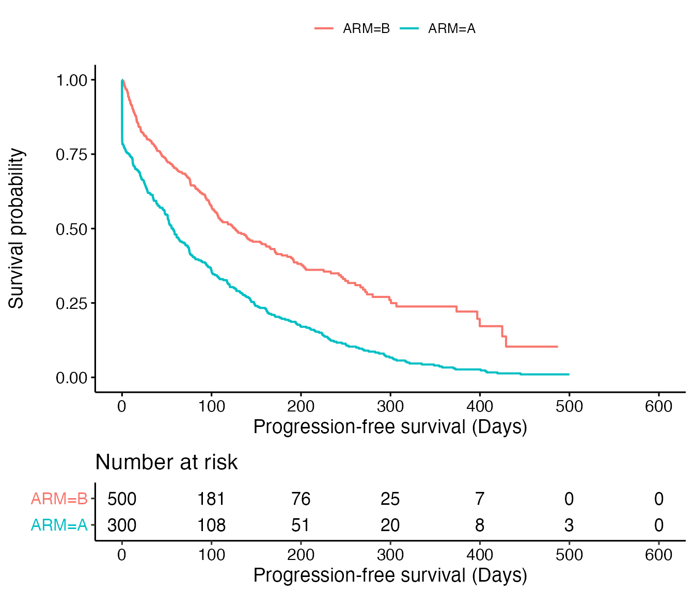
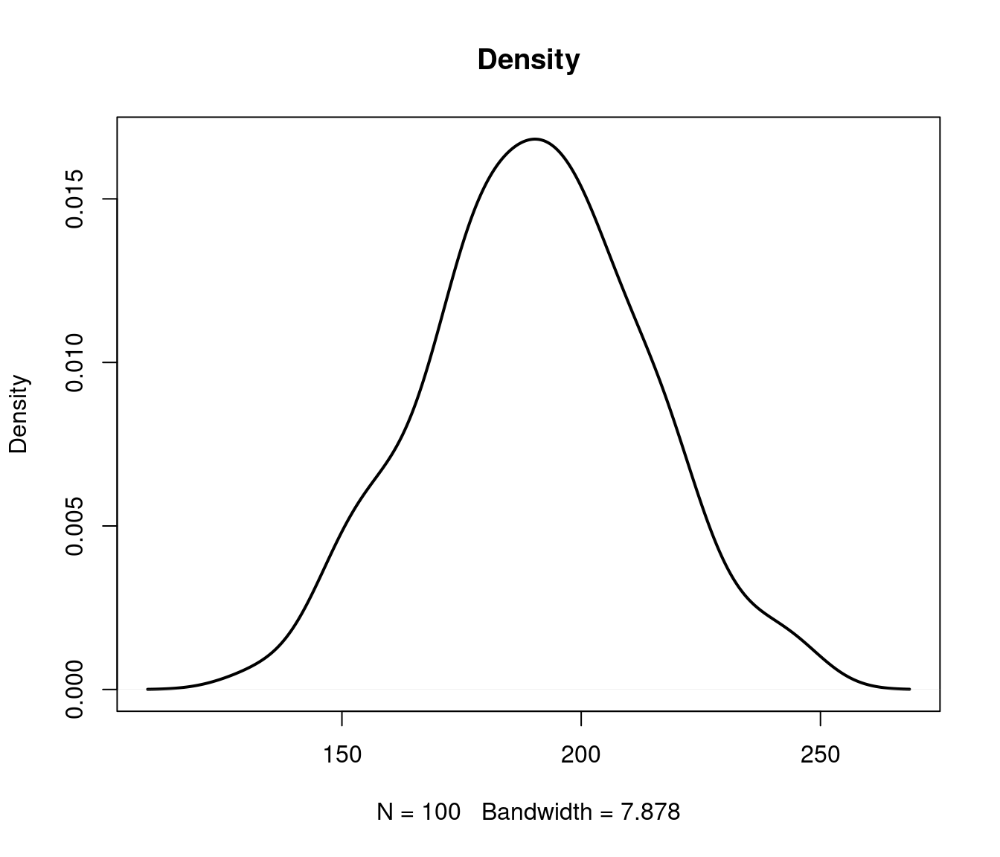
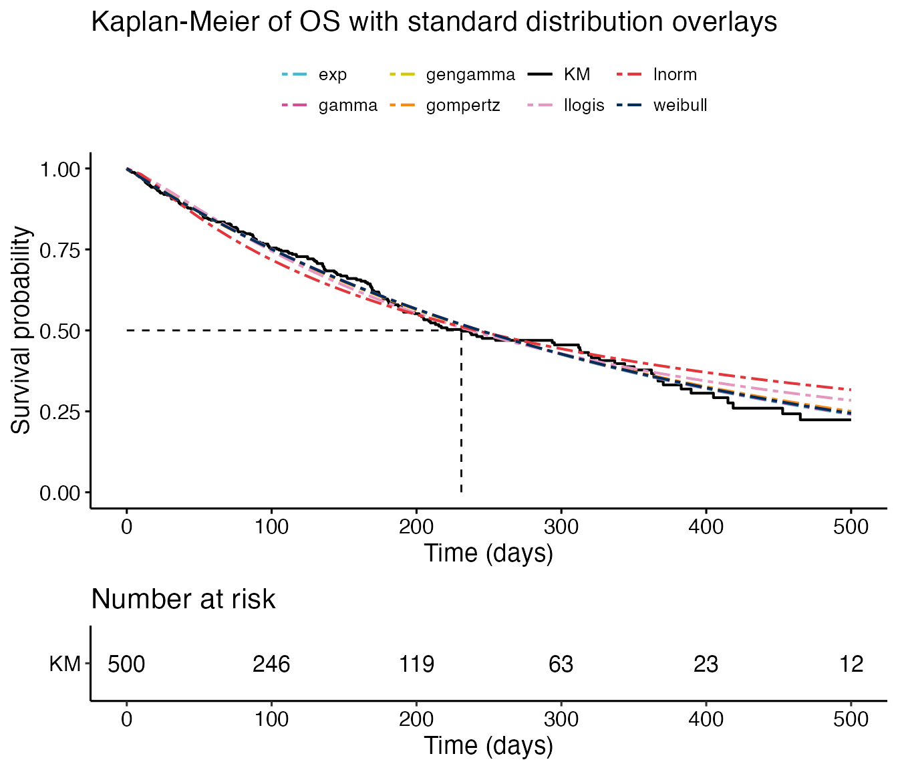
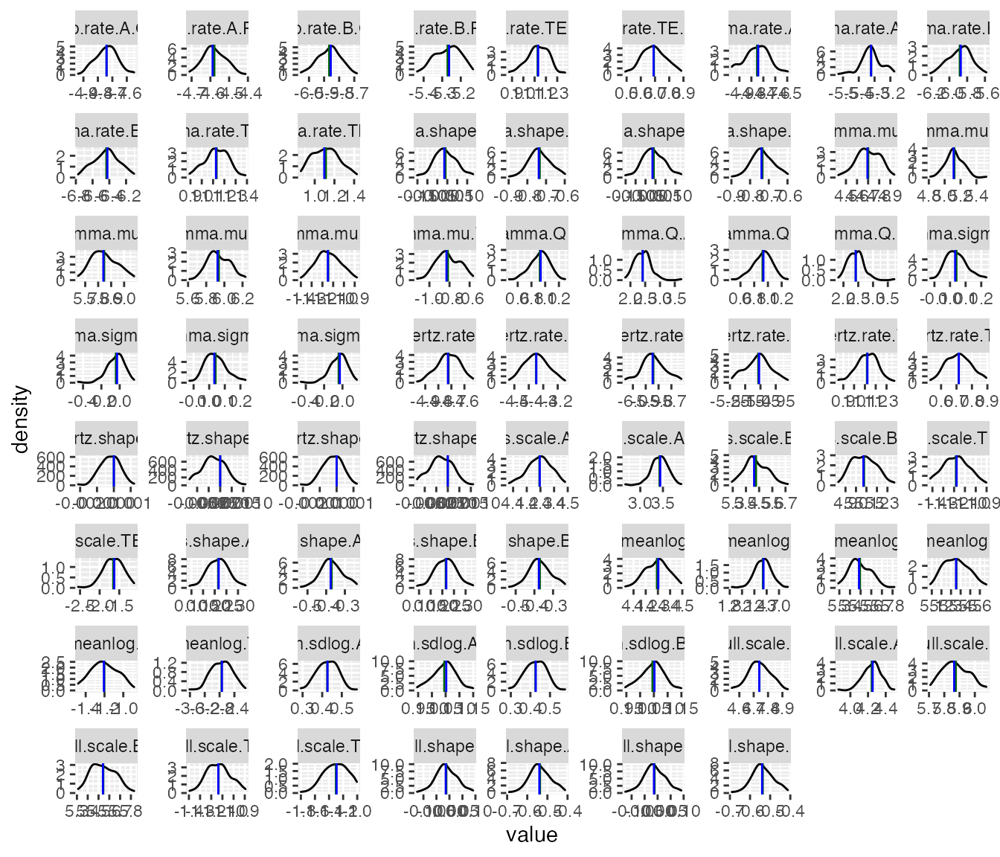

Fitting parametric survival models in R
Roche
2021-01-04
Fitting_models_in_R.RmdIntroduction
Parametric survival models are often the preferred method of extrapolating survival data for use in economic models. The National Institute for Health and Care Excellence (NICE) Decision Support Unit (DSU) technical support document (TSD) 14 recommends that the Exponential, Weibull, Gompertz, log-logistic, log normal and Generalized Gamma parametric models should all be considered.[1] More recently, NICE also discusses more flexible models in NICE DSU TSD 21, however, more these models are not in the scope of this package.[2] The Canadian Agency for Drugs and Technologies in Health (CADTH) additionally specifies that the Gamma distribution must also be considered. This document therefore details the characteristics of each of these distributions and demonstrates how the parameters from each distribution, outputted using the flexsurvPlus package, can be implemented within an economic model.[3]
The flexsurvPlus package allows the inclusion of a treatment effect in the following three ways:
Separate models - Models fitted to each treatment arm separately
Independent shape models - Models fitted to both/all treatment arms including a treatment covariate to model the effect of treatment on both the scale and shape parameter(s) of the distribution.
Common shape models - Models fitted to both/all treatment arms including a treatment covariate to model the effect of treatment on the scale parameter of the distribution. The shape parameter(s) of the distribution is common across treatments which reflects an assumption of proportional hazards or accelerated failure time between treatments depending on the distribution
This document details how to use the flexsurvPlus package to perform these models. A separate vignette; “Parametric survival analysis using the flexsurvPlus package: understanding the theory” details the theory behind the models.
Set up packages and data
Install packages
The following packages are required to run this example:
library(flexsurvPlus)
library(tibble)
library(dplyr)
#>
#> Attaching package: 'dplyr'
#> The following objects are masked from 'package:stats':
#>
#> filter, lag
#> The following objects are masked from 'package:base':
#>
#> intersect, setdiff, setequal, union
library(survival)
library(survminer)
#> Loading required package: ggplot2
#> Loading required package: ggpubr
library(tidyr)
library(boot)
#>
#> Attaching package: 'boot'
#> The following object is masked from 'package:survival':
#>
#> aml
blue = rgb(69, 185, 209, max=255)
red = rgb(225, 55, 60, max=255)
yellow = rgb(238, 224, 30, max=255)
pink = rgb(211,78,147,max=255)
Dblue = rgb(0,45,92,max=255)
Dyellow = rgb(214, 200, 16, max=255)
green = rgb(0,1,0)
Dyellow = rgb(214, 200, 16, max=255)
black<-rgb(0,0,0,max=255)
grey1<-rgb(0,0,0,max=30)
grey2<-rgb(10,10,10,max=30)
grey3<-rgb(20,20,20,max=30)
grey3_dup<-rgb(19,20,20,max=30)
lightPink<-rgb(229,151,192,max=255)
orange<-rgb(247,139,21,max=255)Read in the data
To perform survival analyses, patient level data is required for the survival endpoints.
This example reads in a standard simulated data set (adtte) which is saved as a’.csv’ file. There is no standard naming that is needed for this package however, there are some set variables that are needed:
- Time - a numeric variable
- Event - a binary variable (event=1, censor=0)
- Treatment - a character variable with the name of the intervention treatment
The data must be in “wide” format such that there is one row per patient and columns for each endpoint separately. In this example, we use overall survival (OS) and progression-free survival (PFS). The reference treatment is also set at the end of this chunk of code.
adtte <- read.csv(system.file("extdata", "adtte.csv", package = "flexsurvPlus", mustWork = TRUE))
OS_data <- adtte %>%
filter(PARAMCD=="OS") %>%
mutate(ARM = as.factor(ARM)) %>%
rename(OS_days = AVAL,
OS_event = EVNT,
OS_cens = CNSR
) %>%
select(-PARAMCD, -PARAM)
# subset PFS data and rename
PFS_data <- adtte %>%
filter(PARAMCD=="PFS") %>%
rename(PFS_days = AVAL,
PFS_event = EVNT,
PFS_cens = CNSR
) %>%
select(-PARAMCD, -PARAM)
analysis_data <- left_join(OS_data, PFS_data)
#> Joining, by = c("USUBJID", "ARM", "AVALU")
names(analysis_data$ARM)
#> NULL
analysis_data$ARM <- relevel(as.factor(analysis_data$ARM), ref="B")Exploratory analysis
Before performing any statistical analysis, it is important to explore the data.
Most importantly is a Kaplan-Meier plot and code to do this using ggsurvplot is presented below.
km.est.OS <- survfit(Surv(OS_days, OS_event) ~ ARM , data = analysis_data, conf.type = 'plain')
km.est.PFS <- survfit(Surv(PFS_days, PFS_event) ~ ARM , data = analysis_data, conf.type = 'plain')
#KM_list <- list(OS = km.est.OS, PFS = km.est.PFS)
KM_plot_OS <- ggsurvplot(km.est.OS, risk.table = TRUE, data = analysis_data,
break.time.by = 100,
conf.int = FALSE,
censor=FALSE,
legend.title = '',
xlab = paste0('Overall survival (Days)'),
size = 0.72,
xlim = c(0, 600))
KM_plot_OS
KM_plot_PFS <- ggsurvplot(km.est.PFS, risk.table = TRUE, data = analysis_data,
break.time.by = 100,
conf.int = FALSE,
censor=FALSE,
legend.title = '',
xlab = paste0('Progression-free survival (Days)'),
size = 0.72,
xlim = c(0, 600))
KM_plot_PFS
Fitting the models
The runPSM function fits parametric survival models for multiple distributions using the flexsurv package (using the flexsurvPlus function fit_models), manipulates the flexsurv objects to get the parameter estimates and AIC and BIC value (using the flexsurvPlus function get_params) and rearranges the parameter estimates such that they can easily be output to excel to calculate survival for both the intervention and reference treatment in an economic model.
These functions can be used to estimate 3 types of model:
Separate models - Models fitted to each treatment arm separately
Independent shape models - Models fitted to both/all treatment arms including a treatment covariate to model the effect of treatment on both the scale and shape parameter(s) of the distribution.
Common shape models - Models fitted to both/all treatment arms including a treatment covariate to model the effect of treatment on the scale parameter of the distribution. The shape parameter(s) of the distribution is common across treatments which reflects an assumption of proportional hazards or accelerated failure time between treatments depending on the distribution
Each type of model can be fitted with a multiple distributions. The distributions available for this package are: * Exponential (‘exp’) * Weibull (‘weibull’) * Gompertz (‘gompertz’) * Log-normal (‘lnorm’) * Log-logistic (‘llogis’) * Generalized gamma (‘gengamma’) * Gamma (‘gamma’)
For more information on the different types of models, please see the survival analysis theory vignette included in the flexsurvPlus package.
The inputs to the runPSM function are: data - A data frame containing individual patient data for the relevant time to event outcomes time_var - Name of time variable in ‘data’. Variable must be numerical and >0. event_var - Name of event variable in ‘data’. Variable must be numerical and contain 1’s to indicate an event and 0 to indicate a censor. model.type - Character vector indicating the type of model formula provided. Permitted values are ‘Common shape’, ‘Independent shape’ or ‘Separate’ as per the models explained above. strata_var - Name of stratification variable in “data”. This is usually the treatment variable and must be categorical. int_name - Character to indicate the name of the treatment of interest, must be a level of the “strata_var” column in “data”, used for labelling the parameters. *ref_name - Character to indicate the name of the reference treatment, must be a level of the “strata_var” column in “data”, used for labelling the parameters.
More information about each function can be used by running the code ?runPSM.
Example code for each type of model is presented below.
Separate models for each treatment
These models have been fit using the runPSM function using the model.type=“Separate” argument.
psm_OS_separate <- runPSM(data=analysis_data,
time_var="OS_days",
event_var="OS_event",
model.type="Separate",
distr = c('exp',
'weibull',
'gompertz',
'lnorm',
'llogis',
'gengamma',
'gamma'),
strata_var = "ARM",
int_name="A",
ref_name = "B")
psm_OS_separate
#> $models.int
#> $models.int$exp
#> Call:
#> flexsurv::flexsurvreg(formula = model.formula, data = data, dist = dist)
#>
#> Estimates:
#> est L95% U95% se
#> rate 0.008854 0.007697 0.010184 0.000632
#>
#> N = 300, Events: 196, Censored: 104
#> Total time at risk: 22137.48
#> Log-likelihood = -1122.475, df = 1
#> AIC = 2246.95
#>
#>
#> $models.int$weibull
#> Call:
#> flexsurv::flexsurvreg(formula = model.formula, data = data, dist = dist)
#>
#> Estimates:
#> est L95% U95% se
#> shape 0.9876 0.8861 1.1007 0.0546
#> scale 112.9590 98.0285 130.1634 8.1704
#>
#> N = 300, Events: 196, Censored: 104
#> Total time at risk: 22137.48
#> Log-likelihood = -1122.449, df = 2
#> AIC = 2248.898
#>
#>
#> $models.int$gompertz
#> Call:
#> flexsurv::flexsurvreg(formula = model.formula, data = data, dist = dist)
#>
#> Estimates:
#> est L95% U95% se
#> shape -0.001057 -0.002982 0.000867 0.000982
#> rate 0.009558 0.007874 0.011602 0.000945
#>
#> N = 300, Events: 196, Censored: 104
#> Total time at risk: 22137.48
#> Log-likelihood = -1121.874, df = 2
#> AIC = 2247.747
#>
#>
#> $models.int$lnorm
#> Call:
#> flexsurv::flexsurvreg(formula = model.formula, data = data, dist = dist)
#>
#> Estimates:
#> est L95% U95% se
#> meanlog 4.2379 4.0615 4.4142 0.0900
#> sdlog 1.3944 1.2608 1.5422 0.0716
#>
#> N = 300, Events: 196, Censored: 104
#> Total time at risk: 22137.48
#> Log-likelihood = -1132.13, df = 2
#> AIC = 2268.26
#>
#>
#> $models.int$llogis
#> Call:
#> flexsurv::flexsurvreg(formula = model.formula, data = data, dist = dist)
#>
#> Estimates:
#> est L95% U95% se
#> shape 1.335 1.189 1.499 0.079
#> scale 71.311 60.862 83.555 5.765
#>
#> N = 300, Events: 196, Censored: 104
#> Total time at risk: 22137.48
#> Log-likelihood = -1123.932, df = 2
#> AIC = 2251.864
#>
#>
#> $models.int$gengamma
#> Call:
#> flexsurv::flexsurvreg(formula = model.formula, data = data, dist = dist)
#>
#> Estimates:
#> est L95% U95% se
#> mu 4.6217 4.4013 4.8421 0.1125
#> sigma 1.0841 0.9316 1.2614 0.0838
#> Q 0.7761 0.4307 1.1214 0.1762
#>
#> N = 300, Events: 196, Censored: 104
#> Total time at risk: 22137.48
#> Log-likelihood = -1121.698, df = 3
#> AIC = 2249.396
#>
#>
#> $models.int$gamma
#> Call:
#> flexsurv::flexsurvreg(formula = model.formula, data = data, dist = dist)
#>
#> Estimates:
#> est L95% U95% se
#> shape 1.00359 0.85473 1.17837 0.08221
#> rate 0.00889 0.00698 0.01134 0.00110
#>
#> N = 300, Events: 196, Censored: 104
#> Total time at risk: 22137.48
#> Log-likelihood = -1122.474, df = 2
#> AIC = 2248.948
#>
#>
#>
#> $models.ref
#> $models.ref$exp
#> Call:
#> flexsurv::flexsurvreg(formula = model.formula, data = data, dist = dist)
#>
#> Estimates:
#> est L95% U95% se
#> rate 0.002849 0.002472 0.003285 0.000207
#>
#> N = 500, Events: 190, Censored: 310
#> Total time at risk: 66681.16
#> Log-likelihood = -1303.524, df = 1
#> AIC = 2609.048
#>
#>
#> $models.ref$weibull
#> Call:
#> flexsurv::flexsurvreg(formula = model.formula, data = data, dist = dist)
#>
#> Estimates:
#> est L95% U95% se
#> shape 0.9915 0.8843 1.1118 0.0579
#> scale 352.7019 300.9995 413.2853 28.5253
#>
#> N = 500, Events: 190, Censored: 310
#> Total time at risk: 66681.16
#> Log-likelihood = -1303.514, df = 2
#> AIC = 2611.027
#>
#>
#> $models.ref$gompertz
#> Call:
#> flexsurv::flexsurvreg(formula = model.formula, data = data, dist = dist)
#>
#> Estimates:
#> est L95% U95% se
#> shape 0.000222 -0.001091 0.001534 0.000670
#> rate 0.002773 0.002232 0.003444 0.000307
#>
#> N = 500, Events: 190, Censored: 310
#> Total time at risk: 66681.16
#> Log-likelihood = -1303.472, df = 2
#> AIC = 2610.944
#>
#>
#> $models.ref$lnorm
#> Call:
#> flexsurv::flexsurvreg(formula = model.formula, data = data, dist = dist)
#>
#> Estimates:
#> est L95% U95% se
#> meanlog 5.5661 5.3576 5.7747 0.1064
#> sdlog 1.6573 1.4943 1.8381 0.0876
#>
#> N = 500, Events: 190, Censored: 310
#> Total time at risk: 66681.16
#> Log-likelihood = -1315.832, df = 2
#> AIC = 2635.664
#>
#>
#> $models.ref$llogis
#> Call:
#> flexsurv::flexsurvreg(formula = model.formula, data = data, dist = dist)
#>
#> Estimates:
#> est L95% U95% se
#> shape 1.1596 1.0318 1.3032 0.0691
#> scale 246.4563 207.0622 293.3452 21.9005
#>
#> N = 500, Events: 190, Censored: 310
#> Total time at risk: 66681.16
#> Log-likelihood = -1307.21, df = 2
#> AIC = 2618.42
#>
#>
#> $models.ref$gengamma
#> Call:
#> flexsurv::flexsurvreg(formula = model.formula, data = data, dist = dist)
#>
#> Estimates:
#> est L95% U95% se
#> mu 5.920 5.699 6.142 0.113
#> sigma 0.900 0.625 1.295 0.167
#> Q 1.218 0.556 1.879 0.337
#>
#> N = 500, Events: 190, Censored: 310
#> Total time at risk: 66681.16
#> Log-likelihood = -1303.244, df = 3
#> AIC = 2612.487
#>
#>
#> $models.ref$gamma
#> Call:
#> flexsurv::flexsurvreg(formula = model.formula, data = data, dist = dist)
#>
#> Estimates:
#> est L95% U95% se
#> shape 0.98177 0.84636 1.13884 0.07434
#> rate 0.00277 0.00210 0.00365 0.00039
#>
#> N = 500, Events: 190, Censored: 310
#> Total time at risk: 66681.16
#> Log-likelihood = -1303.495, df = 2
#> AIC = 2610.989
#>
#>
#>
#> $model_summary.int
#> # A tibble: 7 x 5
#> name value coef AIC BIC
#> <chr> <list> <named list> <dbl> <dbl>
#> 1 exp <flxsrvrg> <dbl [1]> 2247. 2251.
#> 2 weibull <flxsrvrg> <dbl [2]> 2249. 2256.
#> 3 gompertz <flxsrvrg> <dbl [2]> 2248. 2255.
#> 4 lnorm <flxsrvrg> <dbl [2]> 2268. 2276.
#> 5 llogis <flxsrvrg> <dbl [2]> 2252. 2259.
#> 6 gengamma <flxsrvrg> <dbl [3]> 2249. 2261.
#> 7 gamma <flxsrvrg> <dbl [2]> 2249. 2256.
#>
#> $model_summary.ref
#> # A tibble: 7 x 5
#> name value coef AIC BIC
#> <chr> <list> <named list> <dbl> <dbl>
#> 1 exp <flxsrvrg> <dbl [1]> 2609. 2613.
#> 2 weibull <flxsrvrg> <dbl [2]> 2611. 2619.
#> 3 gompertz <flxsrvrg> <dbl [2]> 2611. 2619.
#> 4 lnorm <flxsrvrg> <dbl [2]> 2636. 2644.
#> 5 llogis <flxsrvrg> <dbl [2]> 2618. 2627.
#> 6 gengamma <flxsrvrg> <dbl [3]> 2612. 2625.
#> 7 gamma <flxsrvrg> <dbl [2]> 2611. 2619.
#>
#> $parameters
#> exp.rate.A weibull.shape.A weibull.scale.A gompertz.shape.A gompertz.rate.A
#> 1 -4.726913 -0.01250381 4.727025 -0.001057369 -4.650395
#> lnorm.meanlog.A lnorm.sdlog.A llogis.shape.A llogis.scale.A gengamma.mu.A
#> 1 4.237853 0.3324763 0.2887196 4.267055 4.621655
#> gengamma.sigma.A gengamma.Q.A gamma.shape.A gamma.rate.A exp.rate.B
#> 1 0.08071703 0.7760696 0.003578753 -4.722481 -5.860654
#> weibull.shape.B weibull.scale.B gompertz.shape.B gompertz.rate.B
#> 1 -0.008490743 5.865623 0.0002216508 -5.887958
#> lnorm.meanlog.B lnorm.sdlog.B llogis.shape.B llogis.scale.B gengamma.mu.B
#> 1 5.566114 0.5051968 0.148048 5.507185 5.920452
#> gengamma.sigma.B gengamma.Q.B gamma.shape.B gamma.rate.B Model
#> 1 -0.1054668 1.217508 -0.01839982 -5.889741 separate
#> Intervention name Reference name
#> 1 A BIndependent shape models
These models are similar to the separate model for each treatment as they allow all parameters to vary by treatment, however it is performed using 1 model for 2 treatments, rather than 2 models as above. They have been fit using the runPSM function using the model.type=“Independent shape” argument.
psm_OS_ind_shape <- runPSM(data=analysis_data,
time_var="OS_days",
event_var="OS_event",
model.type="Independent shape",
distr = c( 'weibull',
'gompertz',
'lnorm',
'llogis',
'gengamma',
'gamma'),
strata_var = "ARM",
int_name="A",
ref_name = "B")
psm_OS_ind_shape
#> $models
#> $models$weibull
#> Call:
#> flexsurv::flexsurvreg(formula = model.formula, data = data, dist = dist)
#>
#> Estimates:
#> data mean est L95% U95% se exp(est)
#> shape NA 0.99155 0.88431 1.11179 0.05791 NA
#> scale NA 352.70192 300.99947 413.28526 28.52525 NA
#> ARMInt 0.37500 -1.13860 -1.35126 -0.92594 0.10850 0.32027
#> shape(ARMInt) 0.37500 -0.00401 -0.16170 0.15367 0.08045 0.99599
#> L95% U95%
#> shape NA NA
#> scale NA NA
#> ARMInt 0.25891 0.39616
#> shape(ARMInt) 0.85070 1.16611
#>
#> N = 800, Events: 386, Censored: 414
#> Total time at risk: 88818.65
#> Log-likelihood = -2425.963, df = 4
#> AIC = 4859.926
#>
#>
#> $models$llogis
#> Call:
#> flexsurv::flexsurvreg(formula = model.formula, data = data, dist = dist)
#>
#> Estimates:
#> data mean est L95% U95% se exp(est)
#> shape NA 1.1595 1.0318 1.3031 0.0691 NA
#> scale NA 246.4578 207.0629 293.3478 21.9010 NA
#> ARMInt 0.3750 -1.2401 -1.4756 -1.0047 0.1201 0.2893
#> shape(ARMInt) 0.3750 0.1407 -0.0239 0.3053 0.0840 1.1511
#> L95% U95%
#> shape NA NA
#> scale NA NA
#> ARMInt 0.2286 0.3662
#> shape(ARMInt) 0.9764 1.3570
#>
#> N = 800, Events: 386, Censored: 414
#> Total time at risk: 88818.65
#> Log-likelihood = -2431.142, df = 4
#> AIC = 4870.284
#>
#>
#> $models$gompertz
#> Call:
#> flexsurv::flexsurvreg(formula = model.formula, data = data, dist = dist)
#>
#> Estimates:
#> data mean est L95% U95% se exp(est)
#> shape NA 0.000233 -0.001079 0.001546 0.000670 NA
#> rate NA 0.002767 0.002227 0.003438 0.000306 NA
#> ARMInt 0.375000 1.241978 0.951092 1.532863 0.148414 3.462454
#> shape(ARMInt) 0.375000 -0.001306 -0.003636 0.001024 0.001189 0.998695
#> L95% U95%
#> shape NA NA
#> rate NA NA
#> ARMInt 2.588534 4.631419
#> shape(ARMInt) 0.996371 1.001024
#>
#> N = 800, Events: 386, Censored: 414
#> Total time at risk: 88818.65
#> Log-likelihood = -2425.346, df = 4
#> AIC = 4858.692
#>
#>
#> $models$gamma
#> Call:
#> flexsurv::flexsurvreg(formula = model.formula, data = data, dist = dist)
#>
#> Estimates:
#> data mean est L95% U95% se exp(est)
#> shape NA 0.98232 0.84687 1.13943 0.07436 NA
#> rate NA 0.00277 0.00210 0.00365 0.00039 NA
#> ARMInt 0.37500 1.16528 0.79783 1.53273 0.18748 3.20682
#> shape(ARMInt) 0.37500 0.02106 -0.19757 0.23969 0.11155 1.02128
#> L95% U95%
#> shape NA NA
#> rate NA NA
#> ARMInt 2.22072 4.63079
#> shape(ARMInt) 0.82072 1.27085
#>
#> N = 800, Events: 386, Censored: 414
#> Total time at risk: 88818.65
#> Log-likelihood = -2425.969, df = 4
#> AIC = 4859.937
#>
#>
#> $models$lnorm
#> Call:
#> flexsurv::flexsurvreg(formula = model.formula, data = data, dist = dist)
#>
#> Estimates:
#> data mean est L95% U95% se exp(est) L95%
#> meanlog NA 5.5661 5.3576 5.7746 0.1064 NA NA
#> sdlog NA 1.6573 1.4943 1.8381 0.0876 NA NA
#> ARMInt 0.3750 -1.3282 -1.6014 -1.0551 0.1394 0.2649 0.2016
#> sdlog(ARMInt) 0.3750 -0.1727 -0.3172 -0.0283 0.0737 0.8414 0.7282
#> U95%
#> meanlog NA
#> sdlog NA
#> ARMInt 0.3482
#> sdlog(ARMInt) 0.9721
#>
#> N = 800, Events: 386, Censored: 414
#> Total time at risk: 88818.65
#> Log-likelihood = -2447.962, df = 4
#> AIC = 4903.924
#>
#>
#> $models$gengamma
#> Call:
#> flexsurv::flexsurvreg(formula = model.formula, data = data, dist = dist)
#>
#> Estimates:
#> data mean est L95% U95% se exp(est) L95%
#> mu NA 5.923 5.701 6.145 0.113 NA NA
#> sigma NA 0.895 0.620 1.293 0.168 NA NA
#> Q NA 1.226 0.558 1.894 0.341 NA NA
#> ARMInt 0.375 -1.301 -1.614 -0.988 0.160 0.272 0.199
#> sigma(ARMInt) 0.375 0.191 -0.206 0.589 0.203 1.211 0.814
#> Q(ARMInt) 0.375 -0.450 -1.202 0.302 0.384 0.638 0.301
#> U95%
#> mu NA
#> sigma NA
#> Q NA
#> ARMInt 0.372
#> sigma(ARMInt) 1.802
#> Q(ARMInt) 1.353
#>
#> N = 800, Events: 386, Censored: 414
#> Total time at risk: 88818.65
#> Log-likelihood = -2424.941, df = 6
#> AIC = 4861.882
#>
#>
#>
#> $model_summary
#> # A tibble: 6 x 5
#> name value coef AIC BIC
#> <chr> <list> <named list> <dbl> <dbl>
#> 1 weibull <flxsrvrg> <dbl [4]> 4860. 4879.
#> 2 llogis <flxsrvrg> <dbl [4]> 4870. 4889.
#> 3 gompertz <flxsrvrg> <dbl [4]> 4859. 4877.
#> 4 gamma <flxsrvrg> <dbl [4]> 4860. 4879.
#> 5 lnorm <flxsrvrg> <dbl [4]> 4904. 4923.
#> 6 gengamma <flxsrvrg> <dbl [6]> 4862. 4890.
#>
#> $parameters
#> weibull.scale.A weibull.scale.B weibull.shape.A weibull.shape.B
#> 1 4.727025 5.865623 -0.01250379 -0.008490745
#> weibull.scale.TE weibull.shape.TE llogis.scale.A llogis.scale.B
#> 1 -1.138599 -0.004013049 4.267049 5.507191
#> llogis.shape.A llogis.shape.B llogis.scale.TE llogis.shape.TE gompertz.rate.A
#> 1 0.2887151 0.1480288 -1.240142 0.1406863 -4.647951
#> gompertz.rate.B gompertz.shape.A gompertz.shape.B gompertz.rate.TE
#> 1 -5.889928 -0.001072769 0.0002333335 1.241978
#> gompertz.shape.TE gamma.rate.A gamma.rate.B gamma.shape.A gamma.shape.B
#> 1 -0.001306103 -4.723153 -5.888433 0.003218602 -0.01784041
#> gamma.rate.TE gamma.shape.TE lnorm.meanlog.A lnorm.meanlog.B lnorm.sdlog.A
#> 1 1.16528 0.02105901 4.237851 5.566094 0.3324774
#> lnorm.sdlog.B lnorm.meanlog.TE lnorm.sdlog.TE gengamma.mu.A gengamma.mu.B
#> 1 0.5051875 -1.328242 -0.1727101 4.621656 5.922727
#> gengamma.sigma.A gengamma.sigma.B gengamma.Q.A gengamma.Q.B gengamma.mu.TE
#> 1 0.08071701 -0.1106458 0.7760713 1.22599 -1.301072
#> gengamma.sigma.TE gengamma.Q.TE Model Intervention name
#> 1 0.1913629 -0.4499184 Independent shape A
#> Reference name
#> 1 BFit common shape models
These models have been fit using the runPSM function using the model.type=“Common shape” argument.
psm_OS_common_shape <- runPSM(data=analysis_data,
time_var="OS_days",
event_var="OS_event",
model.type="Common shape",
distr = c('exp',
'weibull',
'gompertz',
'lnorm',
'llogis',
'gengamma',
'gamma'),
strata_var = "ARM",
int_name="A",
ref_name = "B")
psm_OS_common_shape
#> $models
#> $models$exp
#> Call:
#> flexsurv::flexsurvreg(formula = model.formula, data = data, dist = dist)
#>
#> Estimates:
#> data mean est L95% U95% se exp(est) L95%
#> rate NA 0.002849 0.002472 0.003285 0.000207 NA NA
#> ARMInt 0.375000 1.133741 0.934198 1.333284 0.101810 3.107259 2.545171
#> U95%
#> rate NA
#> ARMInt 3.793481
#>
#> N = 800, Events: 386, Censored: 414
#> Total time at risk: 88818.65
#> Log-likelihood = -2425.999, df = 2
#> AIC = 4855.998
#>
#>
#> $models$weibull
#> Call:
#> flexsurv::flexsurvreg(formula = model.formula, data = data, dist = dist)
#>
#> Estimates:
#> data mean est L95% U95% se exp(est) L95%
#> shape NA 0.9894 0.9145 1.0705 0.0397 NA NA
#> scale NA 353.1438 303.6234 410.7410 27.2227 NA NA
#> ARMInt 0.3750 -1.1399 -1.3467 -0.9331 0.1055 0.3199 0.2601
#> U95%
#> shape NA
#> scale NA
#> ARMInt 0.3933
#>
#> N = 800, Events: 386, Censored: 414
#> Total time at risk: 88818.65
#> Log-likelihood = -2425.964, df = 3
#> AIC = 4857.928
#>
#>
#> $models$gompertz
#> Call:
#> flexsurv::flexsurvreg(formula = model.formula, data = data, dist = dist)
#>
#> Estimates:
#> data mean est L95% U95% se exp(est)
#> shape NA -0.000213 -0.001295 0.000869 0.000552 NA
#> rate NA 0.002923 0.002411 0.003544 0.000287 NA
#> ARMInt 0.375000 1.124274 0.918752 1.329796 0.104860 3.077982
#> L95% U95%
#> shape NA NA
#> rate NA NA
#> ARMInt 2.506160 3.780274
#>
#> N = 800, Events: 386, Censored: 414
#> Total time at risk: 88818.65
#> Log-likelihood = -2425.926, df = 3
#> AIC = 4857.851
#>
#>
#> $models$lnorm
#> Call:
#> flexsurv::flexsurvreg(formula = model.formula, data = data, dist = dist)
#>
#> Estimates:
#> data mean est L95% U95% se exp(est) L95%
#> meanlog NA 5.4852 5.3068 5.6636 0.0910 NA NA
#> sdlog NA 1.5274 1.4209 1.6419 0.0563 NA NA
#> ARMInt 0.3750 -1.2088 -1.4614 -0.9562 0.1289 0.2985 0.2319
#> U95%
#> meanlog NA
#> sdlog NA
#> ARMInt 0.3843
#>
#> N = 800, Events: 386, Censored: 414
#> Total time at risk: 88818.65
#> Log-likelihood = -2450.702, df = 3
#> AIC = 4907.404
#>
#>
#> $models$llogis
#> Call:
#> flexsurv::flexsurvreg(formula = model.formula, data = data, dist = dist)
#>
#> Estimates:
#> data mean est L95% U95% se exp(est) L95%
#> shape NA 1.2408 1.1428 1.3471 0.0521 NA NA
#> scale NA 237.2853 202.7508 277.7020 19.0419 NA NA
#> ARMInt 0.3750 -1.1882 -1.4147 -0.9617 0.1156 0.3048 0.2430
#> U95%
#> shape NA
#> scale NA
#> ARMInt 0.3822
#>
#> N = 800, Events: 386, Censored: 414
#> Total time at risk: 88818.65
#> Log-likelihood = -2432.545, df = 3
#> AIC = 4871.089
#>
#>
#> $models$gengamma
#> Call:
#> flexsurv::flexsurvreg(formula = model.formula, data = data, dist = dist)
#>
#> Estimates:
#> data mean est L95% U95% se exp(est) L95%
#> mu NA 5.8404 5.6625 6.0184 0.0908 NA NA
#> sigma NA 1.0439 0.9108 1.1965 0.0726 NA NA
#> Q NA 0.9212 0.6508 1.1917 0.1380 NA NA
#> ARMInt 0.3750 -1.1500 -1.3618 -0.9381 0.1081 0.3166 0.2562
#> U95%
#> mu NA
#> sigma NA
#> Q NA
#> ARMInt 0.3914
#>
#> N = 800, Events: 386, Censored: 414
#> Total time at risk: 88818.65
#> Log-likelihood = -2425.806, df = 4
#> AIC = 4859.612
#>
#>
#> $models$gamma
#> Call:
#> flexsurv::flexsurvreg(formula = model.formula, data = data, dist = dist)
#>
#> Estimates:
#> data mean est L95% U95% se exp(est) L95%
#> shape NA 0.991716 0.889305 1.105920 0.055151 NA NA
#> rate NA 0.002812 0.002248 0.003518 0.000321 NA NA
#> ARMInt 0.375000 1.136564 0.932578 1.340550 0.104076 3.116043 2.541052
#> U95%
#> shape NA
#> rate NA
#> ARMInt 3.821144
#>
#> N = 800, Events: 386, Censored: 414
#> Total time at risk: 88818.65
#> Log-likelihood = -2425.988, df = 3
#> AIC = 4857.976
#>
#>
#>
#> $model_summary
#> # A tibble: 7 x 5
#> name value coef AIC BIC
#> <chr> <list> <named list> <dbl> <dbl>
#> 1 exp <flxsrvrg> <dbl [2]> 4856. 4865.
#> 2 weibull <flxsrvrg> <dbl [3]> 4858. 4872.
#> 3 gompertz <flxsrvrg> <dbl [3]> 4858. 4872.
#> 4 lnorm <flxsrvrg> <dbl [3]> 4907. 4921.
#> 5 llogis <flxsrvrg> <dbl [3]> 4871. 4885.
#> 6 gengamma <flxsrvrg> <dbl [4]> 4860. 4878.
#> 7 gamma <flxsrvrg> <dbl [3]> 4858. 4872.
#>
#> $parameters
#> exp.rate.A exp.rate.B exp.rate.TE weibull.scale.A weibull.scale.B
#> 1 -4.726913 -5.860654 1.133741 4.727001 5.866875
#> weibull.shape.A weibull.shape.B weibull.scale.TE gompertz.rate.A
#> 1 -0.0106083 -0.0106083 -1.139875 -4.710777
#> gompertz.rate.B gompertz.shape.A gompertz.shape.B gompertz.rate.TE
#> 1 -5.835051 -0.0002127812 -0.0002127812 1.124274
#> llogis.scale.A llogis.scale.B llogis.shape.A llogis.shape.B llogis.scale.TE
#> 1 4.281024 5.469263 0.2157325 0.2157325 -1.188239
#> gamma.rate.A gamma.rate.B gamma.shape.A gamma.shape.B gamma.rate.TE
#> 1 -4.737217 -5.873781 -0.00831878 -0.00831878 1.136564
#> lnorm.meanlog.A lnorm.meanlog.B lnorm.sdlog.A lnorm.sdlog.B lnorm.meanlog.TE
#> 1 4.276408 5.48523 0.4235878 0.4235878 -1.208822
#> gengamma.mu.A gengamma.mu.B gengamma.sigma.A gengamma.sigma.B gengamma.Q.A
#> 1 4.690469 5.840432 0.04296199 0.04296199 0.9212455
#> gengamma.Q.B gengamma.mu.TE Model Intervention name Reference name
#> 1 0.9212455 -1.149962 Common shape A BOutput parameters to excel
Once all the models have been fit, they can be combined to output to excel such that there is 1 row per model.
parameters_all <- full_join(psm_OS_ind_shape$parameters, psm_OS_common_shape$parameters) %>%
full_join(psm_OS_separate$parameters) %>%
# Add meta data to add in details of analysis
mutate(Study_name = "Study ABC",
Datacut = "Final",
Population = "ITT",
Endpoint = "OS",
Endpoint_def = "NA") %>%
#reorder columns
select("Model", "Intervention name", "Reference name",
Study_name, Datacut, Population, Endpoint, Endpoint_def,
starts_with("exp"), starts_with("weibull"), starts_with("gompertz"), starts_with("lnorm"),
starts_with("llogis"), starts_with("gengamma"), starts_with("gamma")) %>%
arrange(Model)
#> Joining, by = c("weibull.scale.A", "weibull.scale.B", "weibull.shape.A", "weibull.shape.B", "weibull.scale.TE", "llogis.scale.A", "llogis.scale.B", "llogis.shape.A", "llogis.shape.B", "llogis.scale.TE", "gompertz.rate.A", "gompertz.rate.B", "gompertz.shape.A", "gompertz.shape.B", "gompertz.rate.TE", "gamma.rate.A", "gamma.rate.B", "gamma.shape.A", "gamma.shape.B", "gamma.rate.TE", "lnorm.meanlog.A", "lnorm.meanlog.B", "lnorm.sdlog.A", "lnorm.sdlog.B", "lnorm.meanlog.TE", "gengamma.mu.A", "gengamma.mu.B", "gengamma.sigma.A", "gengamma.sigma.B", "gengamma.Q.A", "gengamma.Q.B", "gengamma.mu.TE", "Model", "Intervention name", "Reference name")
#> Joining, by = c("weibull.scale.A", "weibull.scale.B", "weibull.shape.A", "weibull.shape.B", "llogis.scale.A", "llogis.scale.B", "llogis.shape.A", "llogis.shape.B", "gompertz.rate.A", "gompertz.rate.B", "gompertz.shape.A", "gompertz.shape.B", "gamma.rate.A", "gamma.rate.B", "gamma.shape.A", "gamma.shape.B", "lnorm.meanlog.A", "lnorm.meanlog.B", "lnorm.sdlog.A", "lnorm.sdlog.B", "gengamma.mu.A", "gengamma.mu.B", "gengamma.sigma.A", "gengamma.sigma.B", "gengamma.Q.A", "gengamma.Q.B", "Model", "Intervention name", "Reference name", "exp.rate.A", "exp.rate.B")
parameters_all
#> Model Intervention name Reference name Study_name Datacut
#> 1 Common shape A B Study ABC Final
#> 2 Independent shape A B Study ABC Final
#> 3 separate A B Study ABC Final
#> Population Endpoint Endpoint_def exp.rate.A exp.rate.B exp.rate.TE
#> 1 ITT OS NA -4.726913 -5.860654 1.133741
#> 2 ITT OS NA NA NA NA
#> 3 ITT OS NA -4.726913 -5.860654 NA
#> weibull.scale.A weibull.scale.B weibull.shape.A weibull.shape.B
#> 1 4.727001 5.866875 -0.01060830 -0.010608303
#> 2 4.727025 5.865623 -0.01250379 -0.008490745
#> 3 4.727025 5.865623 -0.01250381 -0.008490743
#> weibull.scale.TE weibull.shape.TE gompertz.rate.A gompertz.rate.B
#> 1 -1.139875 NA -4.710777 -5.835051
#> 2 -1.138599 -0.004013049 -4.647951 -5.889928
#> 3 NA NA -4.650395 -5.887958
#> gompertz.shape.A gompertz.shape.B gompertz.rate.TE gompertz.shape.TE
#> 1 -0.0002127812 -0.0002127812 1.124274 NA
#> 2 -0.0010727691 0.0002333335 1.241978 -0.001306103
#> 3 -0.0010573692 0.0002216508 NA NA
#> lnorm.meanlog.A lnorm.meanlog.B lnorm.sdlog.A lnorm.sdlog.B lnorm.meanlog.TE
#> 1 4.276408 5.485230 0.4235878 0.4235878 -1.208822
#> 2 4.237851 5.566094 0.3324774 0.5051875 -1.328242
#> 3 4.237853 5.566114 0.3324763 0.5051968 NA
#> lnorm.sdlog.TE llogis.scale.A llogis.scale.B llogis.shape.A llogis.shape.B
#> 1 NA 4.281024 5.469263 0.2157325 0.2157325
#> 2 -0.1727101 4.267049 5.507191 0.2887151 0.1480288
#> 3 NA 4.267055 5.507185 0.2887196 0.1480480
#> llogis.scale.TE llogis.shape.TE gengamma.mu.A gengamma.mu.B gengamma.sigma.A
#> 1 -1.188239 NA 4.690469 5.840432 0.04296199
#> 2 -1.240142 0.1406863 4.621656 5.922727 0.08071701
#> 3 NA NA 4.621655 5.920452 0.08071703
#> gengamma.sigma.B gengamma.Q.A gengamma.Q.B gengamma.mu.TE gengamma.sigma.TE
#> 1 0.04296199 0.9212455 0.9212455 -1.149962 NA
#> 2 -0.11064584 0.7760713 1.2259897 -1.301072 0.1913629
#> 3 -0.10546684 0.7760696 1.2175081 NA NA
#> gengamma.Q.TE gamma.rate.A gamma.rate.B gamma.shape.A gamma.shape.B
#> 1 NA -4.737217 -5.873781 -0.008318780 -0.00831878
#> 2 -0.4499184 -4.723153 -5.888433 0.003218602 -0.01784041
#> 3 NA -4.722481 -5.889741 0.003578753 -0.01839982
#> gamma.rate.TE gamma.shape.TE
#> 1 1.136564 NA
#> 2 1.165280 0.02105901
#> 3 NA NA
#write.csv(parameters_all, "developing R code/params OS.csv")Estimate survival from the models and plot the curves
Survival at a given time can be estimated using the get_curvefits function as shown below for treatment-effect models.
This can be used to cross check survival in excel models. The example is given below for the treatment-effect models.
# Landmark survival
curvefits_TEM_OS_landmark <- get_curvefits(models = psm_OS_common_shape$models,
time = c(0, 100, 200, 300))
curvefits_df_TEM_OS_landmark <- bind_rows(curvefits_TEM_OS_landmark$curvefits, .id = "Dist") %>%
pivot_wider(names_from = c(Dist, ARM), values_from = est) %>%
as.data.frame()
curvefits_df_TEM_OS_landmark
#> time exp_Ref exp_Int weibull_Ref weibull_Int gompertz_Ref gompertz_Int
#> 1 0 1.0000000 1.00000000 1.0000000 1.00000000 1.0000000 1.00000000
#> 2 100 0.7520608 0.41255895 0.7505372 0.41212147 0.7488330 0.41054348
#> 3 200 0.5655955 0.17020488 0.5656671 0.17205272 0.5641759 0.17173483
#> 4 300 0.4253622 0.07021955 0.4269982 0.07217507 0.4275954 0.07316887
#> lnorm_Ref lnorm_Int llogis_Ref llogis_Int gengamma_Ref gengamma_Int gamma_Ref
#> 1 1.0000000 1.0000000 1.0000000 1.0000000 1.0000000 1.00000000 1.0000000
#> 2 0.7177497 0.4147906 0.7450039 0.4007861 0.7495611 0.40838244 0.7512597
#> 3 0.5486972 0.2517356 0.5528282 0.2205907 0.5638338 0.17452070 0.5657311
#> 4 0.4431115 0.1750247 0.4277628 0.1461258 0.4265918 0.07692335 0.4262962
#> gamma_Int
#> 1 1.00000000
#> 2 0.41253541
#> 3 0.17111969
#> 4 0.07106512The get_curvefits function can also be used to generate the data required to plot the survival curves, overlaid on top of the KM plot. The time argument should reflect how long you want to the extrapolate for and the unit of time is the same as the input data (in this example, days).
The ggsurvplot function from the survminer package has been used to show how the survival curves can be plotted.
# Create data set for plots
curvefits_TEM_OS <- get_curvefits(models = psm_OS_common_shape$models,
time = seq(from=0, to = 500, by = 10))
# format data ready for the plot
curvefits_df_TEM_OS <- bind_rows(curvefits_TEM_OS$curvefits, .id = "Dist") %>%
pivot_wider(names_from = c(ARM), values_from = c(est))
analysis_data_TrtA <- filter(analysis_data, ARM=="A")
analysis_data_TrtB <- filter(analysis_data, ARM=="B")
# Get KM estimates
km.est.OS.TrtA <- survfit(Surv(OS_days, OS_event) ~ 1 , data = analysis_data_TrtA, conf.type = 'plain')
km.est.OS.TrtB <- survfit(Surv(OS_days, OS_event) ~ 1 , data = analysis_data_TrtB, conf.type = 'plain')
# Plot survival curves for arm A
plot.OS.A <- ggsurvplot(km.est.OS.TrtA,
combine = TRUE,
censor = FALSE,
risk.table = TRUE,
conf.int = FALSE,
break.x.by = 100,
xlim = c(0, 500),
xlab = "Time (days)",
size = 0.72,
linetype = c(6,6,6,6, 1, 6, 6,6,6),
title = 'Kaplan-Meier of OS with standard distribution overlays',
legend.title = '',
legend.labs = c("KM"),
surv.median.line = 'hv',
palette = c(rgb(0,0,0,max=30)),
risk.table.y.text.col = F
)
plot.OS.A$plot <- plot.OS.A$plot +
geom_line(aes(x = time, y = Int,
colour = Dist,
linetype = Dist),
size = 0.72,
data = curvefits_df_TEM_OS) +
scale_color_manual(values = c(blue, pink, Dyellow, orange, grey1, lightPink, red, Dblue))
#> Scale for 'colour' is already present. Adding another scale for 'colour',
#> which will replace the existing scale.
plot.OS.A
# Plot survival curves for arm B
plot.OS.B <- ggsurvplot(km.est.OS.TrtB,
combine = TRUE,
censor = FALSE,
risk.table = TRUE,
conf.int = FALSE,
break.x.by = 100,
xlim = c(0, 500),
xlab = "Time (days)",
size = 0.72,
linetype = c(6,6,6,6, 1, 6, 6,6,6),
title = 'Kaplan-Meier of OS with standard distribution overlays',
legend.title = '',
legend.labs = c("KM"),
surv.median.line = 'hv',
palette = c(rgb(0,0,0,max=30)),
risk.table.y.text.col = F
)
plot.OS.B$plot <- plot.OS.B$plot +
geom_line(aes(x = time, y = Ref,
colour = Dist,
linetype = Dist),
size = 0.72,
data = curvefits_df_TEM_OS) +
scale_color_manual(values = c(blue, pink, Dyellow, orange, grey1, lightPink, red, Dblue))
#> Scale for 'colour' is already present. Adding another scale for 'colour',
#> which will replace the existing scale.
plot.OS.B
Bootstrapping
Bootstrapping has been used to estimate the uncertainty of the parameters from the survival models for multiple endpoints at once to preserve the correlation between endpoints. In this example we have used OS and PFS.
Bootstrapping involves:
- Sampling, with replacement, from all patients
- Estimating all specified parametric survival models
This procedure is repeated multiple times to obtain a distribution of parameters. For this example, bootstrap estimates of the parameters were calculated using the boot package. An argument for the boot function is statistic which is a function which when applied to data returns a vector containing the statistic(s) of interest. The bootPSM function in the flexsurvPlus package can be used for this purpose.
The inputs for the bootPSM function are very similar to the runPSM function, however there are a few additional arguments: endpoint1 - Character to indicate the name of the first endpoint, used for labelling. endpoint2 - Character to indicate the name of the second endpoint, used for labelling. time_var2 - Name of time variable in ‘data’ of second endpoint. Variable must be numerical and >0. event_var2 - Name of event variable in ‘data’ of second endpoint. Variable must be numerical and contain 1’s to indicate an event and 0 to indicate a censor *i - Index used to select a sample within boot
set.seed(2358)
n.sim <- 100
PSM_bootstraps <- boot(
statistic = bootPSM, # bootstrap the HR (defined in the MAIC package)
R=n.sim, # number of bootstrap samples
data=analysis_data,
endpoint1 = "OS",
endpoint2 = "PFS",
time_var="OS_days",
event_var="OS_event",
time_var2="PFS_days",
event_var2="PFS_event",
model.type="Common shape",
distr = c('exp',
'weibull',
'gompertz',
'lnorm',
'llogis',
'gengamma',
'gamma'),
strata_var = "ARM",
int_name="A",
ref_name = "B"
)
#> Warning in log(pmax - pmin): NaNs produced
PSM_boot_data <- as.data.frame(PSM_bootstraps$t)
colnames(PSM_boot_data) <- rownames(t(as.data.frame(PSM_bootstraps$t0)))
head(PSM_boot_data)
#> exp.rate.A.OS exp.rate.B.OS exp.rate.TE.OS weibull.scale.A.OS
#> 1 -4.674186 -5.845196 1.171010 4.673623
#> 2 -4.797600 -5.876173 1.078573 4.797855
#> 3 -4.709752 -5.849883 1.140131 4.709715
#> 4 -4.770941 -5.847381 1.076440 4.772141
#> 5 -4.625548 -5.777646 1.152098 4.622378
#> 6 -4.684654 -6.053826 1.369171 4.684643
#> weibull.scale.B.OS weibull.shape.A.OS weibull.shape.B.OS weibull.scale.TE.OS
#> 1 5.851546 -0.0113801573 -0.0113801573 -1.177923
#> 2 5.878513 -0.0041326024 -0.0041326024 -1.080659
#> 3 5.850416 -0.0008988682 -0.0008988682 -1.140701
#> 4 5.865741 -0.0311017803 -0.0311017803 -1.093599
#> 5 5.793506 -0.0287043047 -0.0287043047 -1.171128
#> 6 6.055925 -0.0028474425 -0.0028474425 -1.371282
#> gompertz.rate.A.OS gompertz.rate.B.OS gompertz.shape.A.OS gompertz.shape.B.OS
#> 1 -4.633602 -5.785439 -5.115336e-04 -5.115336e-04
#> 2 -4.774011 -5.836169 -3.222387e-04 -3.222387e-04
#> 3 -4.646541 -5.758642 -8.156143e-04 -8.156143e-04
#> 4 -4.739266 -5.797693 -4.161657e-04 -4.161657e-04
#> 5 -4.584187 -5.716000 -5.437789e-04 -5.437789e-04
#> 6 -4.686864 -6.059226 3.943243e-05 3.943243e-05
#> gompertz.rate.TE.OS llogis.scale.A.OS llogis.scale.B.OS llogis.shape.A.OS
#> 1 1.151837 4.216291 5.426728 0.2354454
#> 2 1.062158 4.424318 5.453127 0.2039985
#> 3 1.112101 4.230947 5.427345 0.2558971
#> 4 1.058427 4.324373 5.462790 0.1923442
#> 5 1.131813 4.123716 5.381890 0.2283585
#> 6 1.372362 4.257061 5.676466 0.2139283
#> llogis.shape.B.OS llogis.scale.TE.OS gamma.rate.A.OS gamma.rate.B.OS
#> 1 0.2354454 -1.210437 -4.674427 -5.845509
#> 2 0.2039985 -1.028808 -4.811046 -5.893516
#> 3 0.2558971 -1.196397 -4.677378 -5.807942
#> 4 0.1923442 -1.138417 -4.819613 -5.908604
#> 5 0.2283585 -1.258174 -4.654605 -5.814336
#> 6 0.2139283 -1.419405 -4.693072 -6.065313
#> gamma.shape.A.OS gamma.shape.B.OS gamma.rate.TE.OS lnorm.meanlog.A.OS
#> 1 -0.0001992957 -0.0001992957 1.171082 4.225725
#> 2 -0.0108939669 -0.0108939669 1.082470 4.450174
#> 3 0.0265876303 0.0265876303 1.130564 4.211791
#> 4 -0.0386295461 -0.0386295461 1.088991 4.307436
#> 5 -0.0241227036 -0.0241227036 1.159730 4.122632
#> 6 -0.0068491605 -0.0068491605 1.372241 4.247357
#> lnorm.meanlog.B.OS lnorm.sdlog.A.OS lnorm.sdlog.B.OS lnorm.meanlog.TE.OS
#> 1 5.422150 0.3894306 0.3894306 -1.1964246
#> 2 5.432125 0.4302597 0.4302597 -0.9819511
#> 3 5.460049 0.3536166 0.3536166 -1.2482576
#> 4 5.503186 0.4558107 0.4558107 -1.1957498
#> 5 5.381795 0.4067877 0.4067877 -1.2591633
#> 6 5.723877 0.4563993 0.4563993 -1.4765197
#> gengamma.mu.A.OS gengamma.mu.B.OS gengamma.sigma.A.OS gengamma.sigma.B.OS
#> 1 4.581333 5.777217 0.08475410 0.08475410
#> 2 4.829137 5.908092 -0.03151651 -0.03151651
#> 3 4.528099 5.713744 0.13486293 0.13486293
#> 4 4.751456 5.850782 0.04986754 0.04986754
#> 5 4.530926 5.729768 0.09485584 0.09485584
#> 6 4.699289 6.065552 -0.01036524 -0.01036524
#> gengamma.Q.A.OS gengamma.Q.B.OS gengamma.mu.TE.OS exp.rate.A.PFS
#> 1 0.8060359 0.8060359 -1.195884 -4.624417
#> 2 1.0820805 1.0820805 -1.078955 -4.623399
#> 3 0.6326642 0.6326642 -1.185646 -4.535589
#> 4 0.9550772 0.9550772 -1.099326 -4.562457
#> 5 0.8233485 0.8233485 -1.198842 -4.611087
#> 6 1.0316204 1.0316204 -1.366264 -4.412868
#> exp.rate.B.PFS exp.rate.TE.PFS weibull.scale.A.PFS weibull.scale.B.PFS
#> 1 -5.212503 0.5880860 4.295979 5.500094
#> 2 -5.224586 0.6011863 4.328940 5.406693
#> 3 -5.199699 0.6641098 4.136033 5.438278
#> 4 -5.133587 0.5711299 4.307231 5.330423
#> 5 -5.227474 0.6163864 4.358169 5.415039
#> 6 -5.253070 0.8402011 3.864199 5.664195
#> weibull.shape.A.PFS weibull.shape.B.PFS weibull.scale.TE.PFS
#> 1 -0.5356830 -0.5356830 -1.204115
#> 2 -0.5034836 -0.5034836 -1.077753
#> 3 -0.5792022 -0.5792022 -1.302246
#> 4 -0.4524836 -0.4524836 -1.023192
#> 5 -0.4625372 -0.4625372 -1.056870
#> 6 -0.6904711 -0.6904711 -1.799996
#> gompertz.rate.A.PFS gompertz.rate.B.PFS gompertz.shape.A.PFS
#> 1 -4.381367 -5.016474 -0.002323964
#> 2 -4.437016 -5.044155 -0.001852966
#> 3 -4.268251 -4.956009 -0.002637671
#> 4 -4.401318 -4.994509 -0.001675125
#> 5 -4.466671 -5.089872 -0.001467683
#> 6 -4.149004 -5.014964 -0.002785059
#> gompertz.shape.B.PFS gompertz.rate.TE.PFS llogis.scale.A.PFS
#> 1 -0.002323964 0.6351069 3.499713
#> 2 -0.001852966 0.6071388 3.571036
#> 3 -0.002637671 0.6877575 3.232364
#> 4 -0.001675125 0.5931911 3.624396
#> 5 -0.001467683 0.6232004 3.681459
#> 6 -0.002785059 0.8659600 2.668471
#> llogis.scale.B.PFS llogis.shape.A.PFS llogis.shape.B.PFS llogis.scale.TE.PFS
#> 1 5.046183 -0.3697310 -0.3697310 -1.546470
#> 2 4.929737 -0.3393161 -0.3393161 -1.358700
#> 3 4.948169 -0.4092871 -0.4092871 -1.715805
#> 4 4.879570 -0.2818601 -0.2818601 -1.255174
#> 5 4.954387 -0.2982552 -0.2982552 -1.272928
#> 6 5.217677 -0.5354050 -0.5354050 -2.549206
#> gamma.rate.A.PFS gamma.rate.B.PFS gamma.shape.A.PFS gamma.shape.B.PFS
#> 1 -5.369388 -6.385789 -0.7339526 -0.7339526
#> 2 -5.330225 -6.274243 -0.7013316 -0.7013316
#> 3 -5.325234 -6.404572 -0.7866457 -0.7866457
#> 4 -5.210436 -6.122085 -0.6456307 -0.6456307
#> 5 -5.273641 -6.226752 -0.6578415 -0.6578415
#> 6 -5.318286 -6.709135 -0.8977908 -0.8977908
#> gamma.rate.TE.PFS lnorm.meanlog.A.PFS lnorm.meanlog.B.PFS lnorm.sdlog.A.PFS
#> 1 1.0164008 2.668089 5.362222 1.0608771
#> 2 0.9440176 2.721691 5.172227 1.0242061
#> 3 1.0793373 2.424389 5.184661 1.0474285
#> 4 0.9116486 2.808905 5.164204 0.9922453
#> 5 0.9531106 2.885349 5.208277 0.9947624
#> 6 1.3908495 1.851255 5.463581 1.1496797
#> lnorm.sdlog.B.PFS lnorm.meanlog.TE.PFS gengamma.mu.A.PFS gengamma.mu.B.PFS
#> 1 1.0608771 -2.694133 5.113837 5.850417
#> 2 1.0242061 -2.450536 5.185129 5.871196
#> 3 1.0474285 -2.760272 5.200495 5.923405
#> 4 0.9922453 -2.355300 5.089272 5.738867
#> 5 0.9947624 -2.322928 5.164256 5.853456
#> 6 1.1496797 -3.612326 5.045563 6.014894
#> gengamma.sigma.A.PFS gengamma.sigma.B.PFS gengamma.Q.A.PFS gengamma.Q.B.PFS
#> 1 0.01401836 0.01401836 2.253584 2.253584
#> 2 -0.10634799 -0.10634799 2.508288 2.508288
#> 3 -0.08299072 -0.08299072 2.671066 2.671066
#> 4 -0.09566747 -0.09566747 2.364474 2.364474
#> 5 -0.13594999 -0.13594999 2.489478 2.489478
#> 6 0.01879412 0.01879412 2.596936 2.596936
#> gengamma.mu.TE.PFS
#> 1 -0.7365796
#> 2 -0.6860675
#> 3 -0.7229095
#> 4 -0.6495951
#> 5 -0.6892003
#> 6 -0.9693311The primary use of the bootstrap samples is to be used in probabilistic sensitivity analyses in economic models. Some basic statistics and diagnostics plots (histograms) can be used to summarise the bootstrap estimates and are presented below.
# Summary of bootstrap values ----------------------------------------------
#Re-format the data
boot_gathered <- PSM_boot_data %>%
gather(key = 'parameter', value = 'value')
#calculate basic summary stats for all parameters
boot_summ <- boot_gathered %>%
group_by(parameter) %>%
summarise(across(.cols = where(is.numeric),
list(
mean = ~mean(., na.rm = TRUE),
sd = ~sd(., na.rm = TRUE),
median = ~median(., na.rm = TRUE),
min = ~min(., na.rm = TRUE),
max = ~max(., na.rm = TRUE)
)
)) %>%
mutate(across(.cols = where(is.numeric), ~round(., 3)), .keep = 'unused')
#> `summarise()` ungrouping output (override with `.groups` argument)
boot_summ
#> # A tibble: 70 x 6
#> parameter value_mean value_sd value_median value_min value_max
#> <chr> <dbl> <dbl> <dbl> <dbl> <dbl>
#> 1 exp.rate.A.OS -4.74 0.076 -4.74 -4.94 -4.55
#> 2 exp.rate.A.PFS -4.58 0.06 -4.59 -4.71 -4.41
#> 3 exp.rate.B.OS -5.87 0.076 -5.86 -6.05 -5.68
#> 4 exp.rate.B.PFS -5.27 0.071 -5.26 -5.44 -5.13
#> 5 exp.rate.TE.OS 1.13 0.101 1.13 0.874 1.37
#> 6 exp.rate.TE.PFS 0.692 0.087 0.69 0.491 0.885
#> 7 gamma.rate.A.OS -4.75 0.108 -4.74 -4.96 -4.50
#> 8 gamma.rate.A.PFS -5.32 0.068 -5.32 -5.53 -5.18
#> 9 gamma.rate.B.OS -5.88 0.13 -5.87 -6.21 -5.58
#> 10 gamma.rate.B.PFS -6.44 0.152 -6.42 -6.77 -6.10
#> # … with 60 more rows
#Density plots for each parameter to show distribution
#Could also be individual plots instead of faceted
p_boot_density <- ggplot(boot_gathered) +
geom_density(aes(value)) +
geom_vline(aes(xintercept = value_mean), boot_summ, colour = 'darkgreen') +
geom_vline(aes(xintercept = value_median), boot_summ, colour = 'blue') +
facet_wrap(~parameter, scales = 'free')
print(p_boot_density)
#References
[1] Latimer N. NICE dsu technical support document 14: Survival analysis for economic evaluations alongside clinical trials-extrapolation with patient-level data. Sheffield: Report by the Decision Support Unit 2011;2013.
[2] Rutherford MJ, Lambert PC, Sweeting MJ, Pennington B, Crowther MJ, Abrams KR, et al. NICE dsu technical support document 21: Flexible methods for survival analysis 2020.
[3] CADTH. Procedures for cadth drug reimbursement reviews 2020.